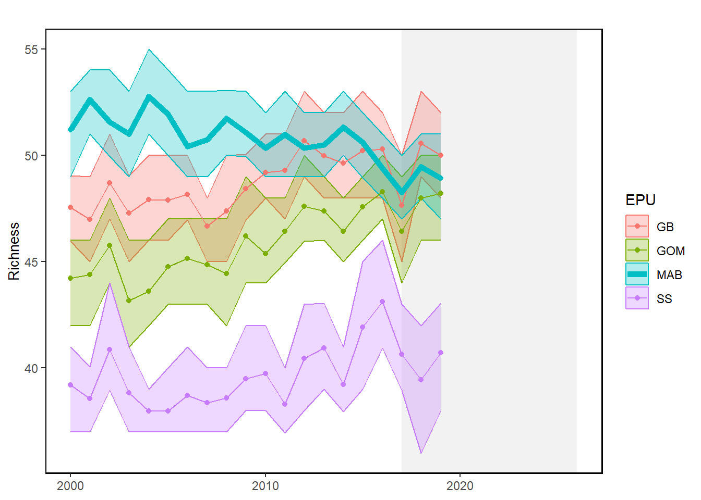
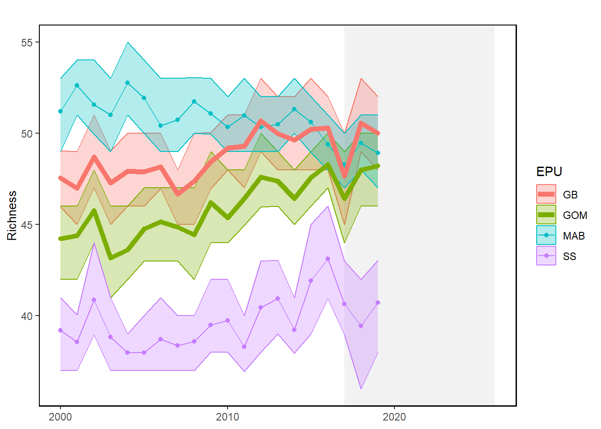

18 Species Richness
Last updated July 23, 2026
Description: Species richness is the number of unique species predicted to be captured in NEFSC bottom trawl survey tows, conducted within each of four ecological production units (EPUs) in each year between 2000 and 2019. This is based on simulations from a joint-species distribution model fitted to presence-absence data for 55 species routinely collected by spring and fall surveys during the corresponding time period. Vessel-specific differences in capture efficiency are estimated by the model, and then predictions are generated at the Albatross IV scale. See SOE Tech Doc for details of the model, species considered, and environmental covariates included.
Contributor(s): Chris Haak and Tori Kentner
Affiliations: NEFSC
Indicator Family:
Indicator Category:
Synthesis Theme:
18.1 Introduction to Indicator
Species richness can indicate the health of the ecosystem as a metric of biodiversity, and changes in richness over time may reflect distribution shifts or community reorganization. In the present context, richness in a given EPU is presented in terms of 55 commonly sampled fish species, as they are predicted to be observed (i.e., present or absent) in NEFSC spring and fall bottom trawl surveys each year over the modeled time period (conditional on a common level of gear efficiency across years).
18.2 Key Results and Visualizations
An overall trend of declining richness can be seen in the more southerly Mid-Atlantic Bight (MAB) region during the modeled time period (2000-2019), while the more northerly regions (i.e., the Gulf of Maine and Georges Bank) are characterized by concurrent gains in richness. These patterns reflect the increasingly rare occurrence of cooler-water species (e.g., Atlantic cod, American plaice, and Atlantic pollock) in southern waters and the growing prevalence of warmer-water species (e.g., weakfish, spotted hake, and black sea bass) in the north, likely as a direct result of warming ocean temperatures.
Richness, Mid-Atlantic

Richness, New England

18.3 Implications
The contrasting EPU-specific trends displayed here highlight changes in the composition of marine fish assemblages that are consistent with expected species distribution shifts under warming water temperatures. It is important to note, however, that these estimates of richness consider only a certain (pre-specified) subset of community members, and are not representative of the entire fish community. For instance, it is probable that southerly (warmer-water) species not included in our analysis may be occurring in the MAB with increased frequency, effectively offsetting richness declines in that region. Still, decreases in the prevalence of cooler water taxa in the MAB may signal that fisheries in this region should reassess any reliance on stocks that are fished near the southern extents of their range, and/or shift fishing effort to more southerly species. Simultaneously, an apparent influx of southerly species in the GOM and GB may eventually necessitate the adjustment of management quotas across regions.
18.4 Indicator statistics
Spatial scale: Ecological production units (4) on the Northeast US continental shelf (as sampled by NEFSC spring and fall bottom trawl surveys)
Temporal scale: Spring (March-May) and fall (September-November) NEFSC bottom trawl surveys from 2000-2019
Variable definitions
18.5 Get the data
Point of contact: Chris Haak (chrishaak@gmail.com)
ecodata dataset: ecodata::habitat_diversity
Tech Doc link: https://noaa-edab.github.io/tech-doc/habitat_diversity.html